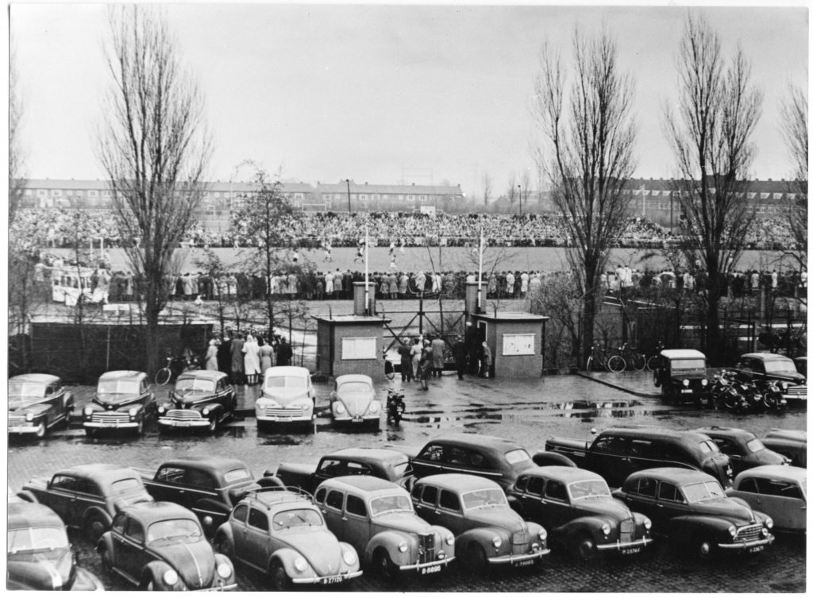

Het ontstaan van SC Cambuur
SC Cambuur is ontstaan in 1964. De club heeft VV Leeuwarden vervangen. VV Leeuwarden is een club die opgericht is op 14 augustus 1917. De velden waar ze op trainden lagen op de Insulindestraat in Leeuwarden. De club was van oorsprong een zondagclub, maar heeft ook meegedaan met de zaterdagafdeling. In die tijd was er alleen nog maar amateurvoetbal in Nederland. Later werd het betaald voetbal. VV Leeuwarden heeft daar ook een vergunning voor gehad met het betaald voetbal. Door geldproblemen zijn ze daarmee gestopt en werd het door SC Cambuur overgenomen.
De naam Cambuur heeft te maken met het feit dat Cambuur afkomstig is van de familie de Van Cammingha´s. Deze familie heeft het wapenschild dat nu het logo van SC Cambuur is. De familie is een edele familie en heeft een belangrijke rol in de Nederlandse geschiedenis gespeeld. Vooral met de macht die ze in Friesland hadden. Dus daarom ziet het logo van Cambuur er zo uit en zijn de hoofdkleuren geel en blauw. Alles stamt af van deze familie. De reden waarom het afstamt van deze familie is, omdat op de plaats van het kasteel van de familie nu het Cambuurstadion staat. Het kasteel heette vroeger ook Cambuur, net als de buurt. Daar heeft Sietse Westra mee te maken. De oprichter van Cambuur. Die wilde het nieuwe Cambuurstadion daar hebben.
Sietse Westra richtte zich op Cambuur, nadat VV Leeuwarden het financieel niet lukte om op betaald voetbal te spelen. Zo wilde hij het betaald voetbal in Leeuwarden behouden. Zo werd ook op 19 juni 1964 stichting Cambuur opgericht wat tot vandaag veel doet voor mensen die het moeilijk hebben. Daar regelen zij activiteiten voor en geven cadeaus om beter rond te komen. Stichting Cambuur kreeg in die tijd een gemeentelijke bijdrage van 110.000. Deze bijdrage stopte in 1992, omdat de bouw van het Cambuurstadion bijna afgerond was. Sietse Westra zorgde ervoor dat een oude familie werd geëerd en dat het betaald voetbal in Leeuwarden bleef, door Cambuur op te richten.
Wat ook bij Cambuur hoort is het onofficiële clublied: ’t Woanskip, van Anneke Douma. Het lied is in 1983 door Irish Stew geschreven en is gecoverd door Anneke Douma. Een paar Cambuursupports hebben het lied meegebracht naar Cambuur. Doordat de supporters het Woanskip zongen is het later het goallied geworden van SC Cambuur.
